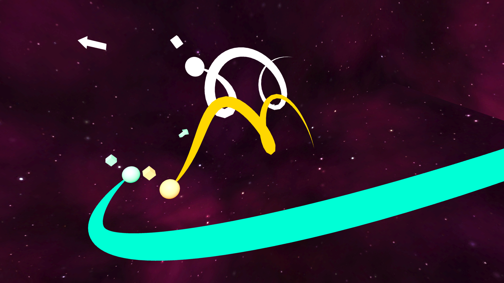

En simulator för himlakroppar i VR
För ett tag sedan programmerade jag ett realistiskt planetarie, det fungerade bra men det var svårt att uppfatta tredimensionella planetbanor, det blev lätt att missbedöma avstånd när man granskade en tvådimensionell skärm. Då fick jag idén att bygga det hela i VR istället.
Hela idén bygger på att du kan greppa tag i planeter på ett väldigt naturligt sätt för att sedan kunna flytta på dem. Dessutom har varje planet en pil som visar vart de är på väg, även den kan du greppa tag i och därmed ändra planetens kurs.
Allt som allt ett lyckat projekt, det går lätt att förlora sig länge i den alternativa världen där man har makt över hela universum.